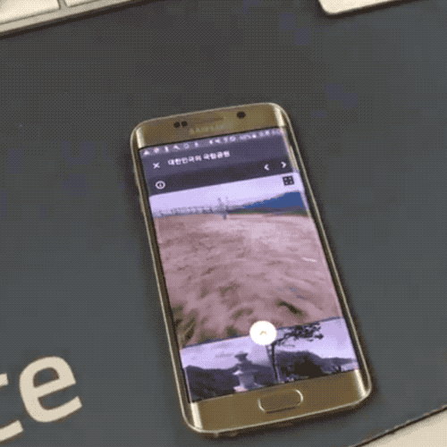

View360: 360° Viewer & Sensor Fusion Engine
From internal library to 531-star open source project adopted by Amazon.com and Hyundai. Published NPM package, built demo pages and API docs, presented at DEVIEW 2017.
Enterprise Adoption

Amazon.com adopted View360 for their automotive showroom product pages, and Hyundai Motor Company integrated it for vehicle interior views.

Key Metrics
Conference Talks & External Advocacy

- DEVIEW 2017 — NAVER's flagship developer conference, 200+ attendees. Deep dive into WebGL rendering pipeline, sensor fusion algorithms, and gyroscope calibration techniques. Press coverage →
- NAVER Open Source Seminar — Internal-to-external open source process
- WebRTC Competition — 2nd place with sensor telemetry visualization tool
NPM Publishing & Package Design
Designed the package API for external consumption — clean entry points, TypeScript definitions,
and tree-shakable ES module builds. Published to NPM under @egjs/view360.

Demo Page & Documentation
Built an interactive demo site at naver.github.io/egjs-view360 with live examples for equirectangular, cubemap, and partial panorama projections. API reference generated from JSDoc annotations.

The Journey
-
2016 Q1Internal POC development begins
-
2016 Q3Production deployment to NAVER Blog, Post, TV
-
2016 Q4Open source release (GitHub + NPM)
-
2017 Q1Demo page & API documentation site
-
2017 Q2DEVIEW 2017 presentation (200+ attendees)
-
2017 Q3Axes input library extracted as separate package
-
2017 Q4GitHub 100★ milestone
-
2018 Q1Adopted by Amazon.com (automotive showroom)
-
2018 Q2Adopted by Hyundai Motor Company
-
Current531★ GitHub, 5K+ weekly NPM downloads
DEVIEW 2017 — "360° Viewer from Scratch" (English translation)
Links
Implementing 360° camera control in mobile browsers using DeviceMotion and DeviceOrientation APIs.
Problem
The high-level orientation API bundled magnetometer data, causing the viewport to drift when nearby electronics moved. On certain devices, gyroscope drift accumulated silently — the image kept rotating even with the phone held still.

Magnetometer noise: nearby electronics cause random drift

Gyro drift: image keeps rotating on a stationary device
Solution
Built a custom sensor fusion pipeline: split raw accelerometer and gyroscope streams, applied a complementary filter, and used the high-level API solely for stillness detection to correct drift offset. Added a telemetry dashboard to monitor orientation, drift, and corrections in real time.
Complementary filter fusing gyro (short-term) and accelerometer (long-term)
Telemetry dashboard: real-time orientation, drift, and correction monitoring
Result
Stabilized motion control across Galaxy S6–S8, covering the majority of mobile users. Adopted by four NAVER services.
Adopted by NAVER Blog, TV, V Live, and Real Estate